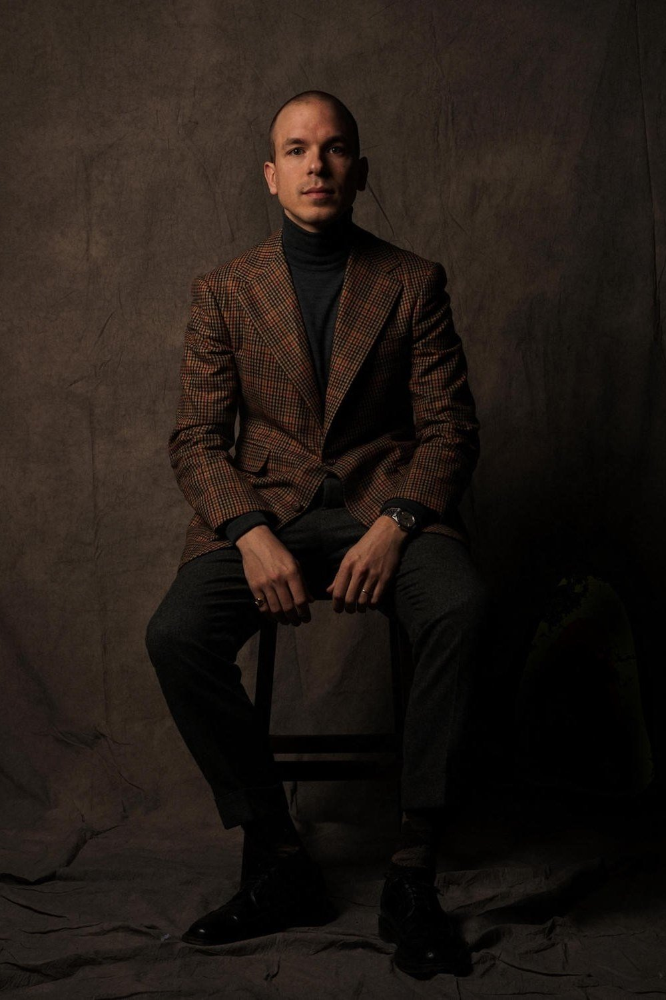

Vintage clothing has become more and more popular over the past decade. Underneath obvious markers like the launch of brands RRL, or artificially aged sneakers, men have been gradually buying into vintage because it’s authentic, because it’s a way to buy old styles that are suddenly trendy, and just as importantly, because it’s cheap. I’ve bought vintage off-and-on for most of that time. Initially leather goods, then military clothing, and more recently outerwear. I wrote a post earlier this week about one piece, an M47 Parka. However, I’m a real beginner when it comes to buying vintage. So I turned to three friends to get their advice, providing tips for any readers venturing into vintage clothing.
Most importantly, buy things that you want to wear rather than as collector’s pieces. You’re looking to fill the holes in your wardrobe and/or find a superior quality version of something current, so buy things that are practical and wearable. Some people look at me shocked if I’m wearing a jacket they know to be particularly rare or special rather than keeping it hermetically sealed in my house, but I’m building a wardrobe, not a museum.
Again, just don’t let that affect your decision making too much. There will always be mini-trends on the vintage market and things fall in and out of favour, so look more for quality, fit and value. Pricing will ultimately be directed by scarcity, but there’s plenty of scope to still buy cheap. If you take the classic Vietnam-era US Army “Jungle Jacket”, the much-copied staple, a first pattern was issued in the late 50s when there were less than 1000 US troops “in country”. Therefore the numbers in circulation were minuscule compared to the fourth pattern issued in 1968, when there were over half a million US soldiers stationed there. A deadstock 4th pattern should set you back £50 or so. A first pattern? Good luck. Is it OK to alter vintage clothing to fit, or is that undermining the point of it? I mean, that is entirely up to you. The reason I buy vintage, however, is often for a specific fit. Unfortunately when a lot of current brands bring out their take on military vintage, they “modernise” the fit, particularly slimming down the silhouette. That aside, I do like finding pieces that people modified contemporaneously, adding another level of personality to the item. The other reason I buy vintage is for fabric choice. There’s just a different feel to worn in cloths, especially cottons. As the fibres in poplin or “Cramerton” chino cloth, for example, break down they gain an incredible handle and texture that you cannot replicate.